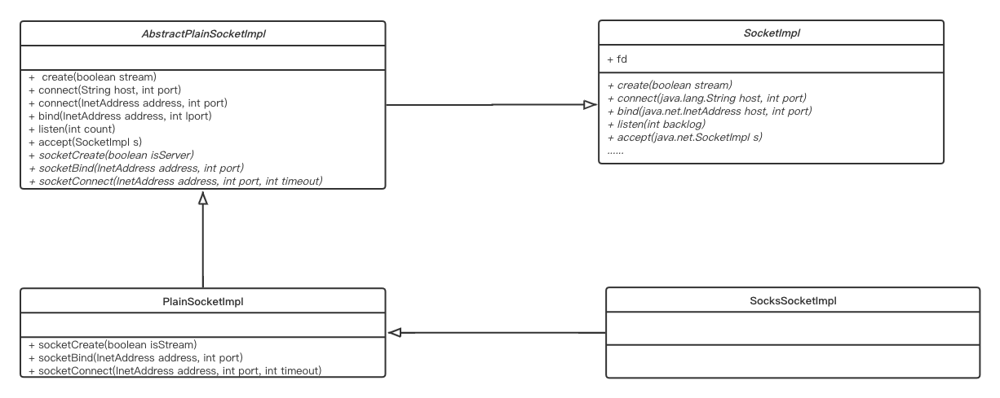

for (int i = 0; i < addresses.length; i++) { setImpl(); try { InetSocketAddress address = new InetSocketAddress(addresses[i], port); createImpl(stream); if (localAddr != null) { bind(localAddr); } connect(address); break; } catch (IOException | IllegalArgumentException | SecurityException e) { try { // Android-changed: Let ctor call impl.close() instead of overridable close(). // Subclasses may not expect a call to close() coming from this constructor. impl.close(); closed = true; } catch (IOException ce) { e.addSuppressed(ce); }
// Only stop on the last address. if (i == addresses.length - 1) { throw e; } }
// Discard the connection state and try again. impl = null; created = false; bound = false; closed = false; } }
可以看到，在此处的逻辑中，最主要只有如下四个函数
setImpl()
createImpl(stream)
bind(localAddr)
connect(address)
再对以上四个函数进行逐一分析
先看一下 SocketImpl 及其子类的UML类图 
setImpl
1 2 3 4 5 6 7 8 9 10 11 12
voidsetImpl(){ if (factory != null) { impl = factory.createSocketImpl(); checkOldImpl(); } else { // No need to do a checkOldImpl() here, we know it's an up to date // SocketImpl! impl = new SocksSocketImpl(); } if (impl != null) impl.setSocket(this); }
voidsocketCreate(boolean isStream)throws IOException { // The fd object must not change after calling bind, because we rely on this undocumented // behaviour. See libcore.java.net.SocketTest#testFileDescriptorStaysSame. fd.setInt$(IoBridge.socket(AF_INET6, isStream ? SOCK_STREAM : SOCK_DGRAM, 0).getInt$()); IoUtils.setFdOwner(fd, this);
// PlainSocketImpl voidsocketBind(InetAddress address, int port)throws IOException { if (fd == null || !fd.valid()) { thrownew SocketException("Socket closed"); }
IoBridge.bind(fd, address, port);
this.address = address; if (port == 0) { // Now that we're a connected socket, let's extract the port number that the system // chose for us and store it in the Socket object. localport = IoBridge.getLocalInetSocketAddress(fd).getPort(); } else { localport = port; } }
publicvoidconnect(SocketAddress endpoint, int timeout)throws IOException { if (endpoint == null) thrownew IllegalArgumentException("connect: The address can't be null");
if (timeout < 0) thrownew IllegalArgumentException("connect: timeout can't be negative");
if (isClosed()) thrownew SocketException("Socket is closed");
if (!oldImpl && isConnected()) thrownew SocketException("already connected");
if (!(endpoint instanceof InetSocketAddress)) thrownew IllegalArgumentException("Unsupported address type");
InetSocketAddress epoint = (InetSocketAddress) endpoint; InetAddress addr = epoint.getAddress (); int port = epoint.getPort(); checkAddress(addr, "connect");
SecurityManager security = System.getSecurityManager(); if (security != null) { if (epoint.isUnresolved()) security.checkConnect(epoint.getHostName(), port); else security.checkConnect(addr.getHostAddress(), port); } if (!created) createImpl(true); if (!oldImpl) impl.connect(epoint, timeout); elseif (timeout == 0) { if (epoint.isUnresolved()) impl.connect(addr.getHostName(), port); else impl.connect(addr, port); } else thrownew UnsupportedOperationException("SocketImpl.connect(addr, timeout)"); connected = true; /* * If the socket was not bound before the connect, it is now because * the kernel will have picked an ephemeral port & a local address */ bound = true; }
connectToAddress(address, port, timeout); connected = true; } finally { if (!connected) { try { close(); } catch (IOException ioe) { /* Do nothing. If connect threw an exception then it will be passed up the call stack */ } } } }
privatevoidconnectToAddress(InetAddress address, int port, int timeout)throws IOException { if (address.isAnyLocalAddress()) { doConnect(InetAddress.getLocalHost(), port, timeout); } else { doConnect(address, port, timeout); } }
synchronizedvoiddoConnect(InetAddress address, int port, int timeout)throws IOException { synchronized (fdLock) { if (!closePending && (socket == null || !socket.isBound())) { NetHooks.beforeTcpConnect(fd, address, port); } } try { acquireFD(); try { // Android-added: BlockGuard. BlockGuard.getThreadPolicy().onNetwork(); socketConnect(address, port, timeout); /* socket may have been closed during poll/select */ synchronized (fdLock) { if (closePending) { thrownew SocketException ("Socket closed"); } } // If we have a ref. to the Socket, then sets the flags // created, bound & connected to true. // This is normally done in Socket.connect() but some // subclasses of Socket may call impl.connect() directly! if (socket != null) { socket.setBound(); socket.setConnected(); } } finally { releaseFD(); } } catch (IOException e) { close(); throw e; } }
voidsocketConnect(InetAddress address, int port, int timeout)throws IOException { if (fd == null || !fd.valid()) { thrownew SocketException("Socket closed"); }
IoBridge.connect(fd, address, port, timeout);
this.address = address; this.port = port;
if (localport == 0) { // If socket is pending close, fd becomes an AF_UNIX socket and calling // getLocalInetSocketAddress will fail. // http://b/34645743 if (!isClosedOrPending()) { localport = IoBridge.getLocalInetSocketAddress(fd).getPort(); } } }